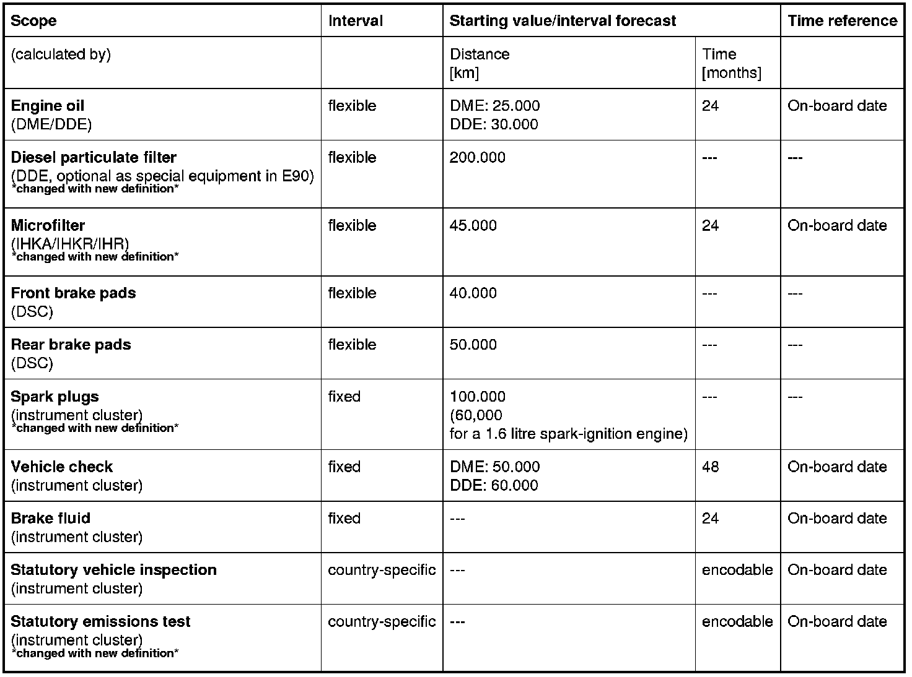

Condition Based Service
00 01 04 (070)
Condition Based Service
E87, E90, E91, E92, E93

Introduction
New scopes of maintenance work have been defined for Condition Based Service (CBS).
This will affect all model series with CBS, but each model will be affected at a different point in time.
The timing is orientated around the model upgrading or the start of series production.
The changes are described using the examples of the BMW 1-Series and BMW 3-Series. The introduction date is 03/2007 (E93 12/2006).
The following maintenance operations will be discontinued from CBS in the future.
- Microfilter
- Spark plugs
- Diesel particulate filter
- Exhaust emissions test
(change through encoding since 09/2006)
The affected text passages are marked in this SI Technology bulletin with *changed with new definition*.
Vehicles produced before the change are not affected.
Note: The operations microfilter and spark plugs are now coupled to the operation engine oil.
The emissions test can again be activated using the BMW diagnosis system.
Concept of Condition Based Service (CBS):
Continuous developments in networking within the vehicle are constantly offering new ways in which the vehicle can communicate with the environment. This is becoming more and more beneficial for after-sales service. The Connected Service consists of several modules and provides new opportunities: from the automatic, vehicle-specific determination of the service requirement, to the optimisation of the acceptance process.
The expectations of the most demanding customers are therefore fulfilled:
- Precise date scheduling through distance-based or time-based interval forecasts for control units subject to wear
- Early recognition of problems
- Flexible service
- Individual advice and customer care (with visualisation of the CBS data in the "Service reception" module)
One component of the Connected Service is requirement-oriented service:
Condition Based Service (CBS) .
In the BMW 1-Series and the new 3-Series, CBS is available in its 4th level of development.
The remaining distance and/or absolute service-due date for maintenance operations are calculated and shown separately.
The calculation includes an integrated interval forecast, which reflects the driving profile.
With the flexible service intervals, the last service interval is taken as the new starting value.
CBS data are stored in the remote control (= key) or in the ID transmitter (with Comfort Access) while the vehicle is being driven. The service advisor can then read the CBS data using the KeyReader. The CBS data is displayed using the Service Acceptance Module (SAM).
After coordinating the Service measures, the order-specific service sheet can be printed out from the SAM.
Brief description of components
The Condition Based Service is a system function distributed over several control units in the vehicle.
- Instrument cluster
The instrument cluster is the central unit. The CBS data for the full scope of maintenance work is stored in the instrument cluster. The information from the connected control units and information to be managed internally flow together into the instrument cluster (evaluation by traffic-light colours).
In the instrument cluster the service requirement indicator appears for approximately 6 seconds at terminal 15 ON.
The service requirement indicator shows the overall status of the vehicle in connection with the CBS.
Detailed information on the full scope of maintenance work can also be requested manually. The display can be called up in either the instrument cluster or the Central Information Display (with M-ASK or CCC).
The following target dates can be input in the instrument cluster:
- Statutory vehicle inspection
- Statutory emissions test
*changed with new definition*
A maintenance operation can be reset using the reset button for the trip distance recorder.
The instrument cluster initialises an automatic ServiceCall when a maintenance operation is due (TeleService 1 at BMW Assist telematics service centre).
- Central Information Display
On vehicles with multi-audio system controller (M-ASK) or Car Communication Computer (CCC): With this equipment, a folding Central Information Display (CID) is built into the dashboard.
In the "Service" menu (in the 5th menu, "Settings"), detailed information on the scope of maintenance work of the CBS can be called up.
In addition the following target dates can be input in the same menu:
- Statutory vehicle inspection
- Statutory emissions test
*changed with new definition*
A manual ServiceCall can also be triggered at the CID.
- Remote control or identification signal
The CBS data is stored in both the remote control and the identification signal unit.
The CBS data can be read out with the KeyReader in the Service Centre.
The CBS data is displayed by the Service Acceptance Module (SAM).
An identification signal unit is used for vehicles with Comfort Access.
For the Condition Based Service (CBS), information is exchanged with the following control units:
- CAS: Car Access System
From the CAS control unit, under certain conditions, the CBS data in the remote control or in the identification signal unit is updated (see key data Enclosure).
The CBS data is stored in the instrument cluster and, once redundant, in the CAS control unit. If the CAS control unit and the instrument cluster are replaced at the same time, the CBS data administered by the instrument cluster will then be lost. The data is delivered to the K-CAN.
- DME or DDE: digital engine electronics or digital diesel electronics
Maintenance requirements for the engine oil is calculated in the DME control unit or DDE control unit (maintenance requirements = remaining distance and latest date for the engine oil change). The most important input value here is the fuel consumption.
The instrument cluster contains the data as follows:
DME control unit or DDE control unit -> PT-CAN -> Junction box electronics (gateway)
-> K-CAN -> Instrument cluster
On diesel engines, the DDE control unit calculates the maintenance requirements for the diesel particulate filter.
*changed with new definition*
- IHKA/IHKR/IHR: Integrated automatic heating/air-conditioning system, integrated heating/air-conditioning system, integrated heating system
*changed with new definition*
The maintenance requirements for the microfilter are calculated in this control unit (maintenance requirements = remaining distance and latest date for the microfilter change).
The scope of maintenance work is calculated by the control unit from various values.
The instrument cluster contains the data as follows:
IHKA control unit, IHKR control unit or IHR control unit -> K-CAN -> Instrument cluster
- DSC: Dynamic Stability Control
The remaining distance for the front and back brake pads are calculated separately in the DSC control unit. When making the calculation, the condition of the brake pad wear sensors is taken into account (reference point at 6 mm and 4 mm).
The instrument cluster contains the data as follows:
DME control unit -> PT-CAN -> Junction box electronics (gateway) -> K-CAN -> Instrument cluster
Important: Replace brake pad wear sensors before resetting.
- JBE: Junction box electronics
The junction box electronics is the gateway between the PT-CAN and the K-CAN. Moreover, the diagnosis cable is connected to the junction box electronics (see Service functions).
- CA: Comfort Access
For vehicles with Comfort Access:
Under certain conditions the CBS data is saved on the identification signal unit. For this to happen, the identification signal unit should not be in the insert compartment. The CA control unit transfers the data via the interior aerial (radio).
- TCU or ULF: Telematics control unit or universal charger and hands-free system
The control unit for the telephone is needed for an automatic or manual ServiceCall (TeleService 2 at BMW Assist telematics service centre).
The ServiceCall triggers the instrument cluster.
The TCU or the ULF (universal charger/hands-free system) receives the data as follows:
Instrument cluster -> K-CAN -> CCC or M-ASK (gateway) -> MOST -> TCU or ULF
System functions
With the Condition Based Service a maximum of 10 maintenance operations are realised:
- Engine oil
- Diesel particulate filter (either as standard or option)
*changed with new definition*
- Microfilter
*changed with new definition*
- Front brake pads
- Rear brake pads
- Spark plugs
*changed with new definition*
- Vehicle check
- Brake fluid
- Statutory vehicle inspection
- Statutory emissions test
*changed with new definition*
- Pre-delivery check
(service function)
For reasons of clarity, maintenance operations and their intervals will be given first (valid for EURO vehicles).
In certain countries, different values may be applicable for e.g. engine oil or spark plugs.

Important: The reference time for time-dependent maintenance operations is the on-board date.
The on-board date is used for the display of escalation (green symbol, yellow symbol, red symbol). In addition, the on-board date is the basis for sorting the maintenance requirements in the display.
The on-board date stands still when the battery is flat or disconnected and must subsequently be corrected in the vehicle.
The on-board date must be set correctly when resetting maintenance requirements. Resetting is described in the general service information.
Engine oil
The determination of the correct time for a DME/DDE oil change depends on various values:
- Fuel consumption
The quantity of fuel used since the last oil change is recorded as an auxiliary quantity for evaluating the quality of the oil.
- Time
Once in place, the oil will deteriorate with age. The calculation for the oil change determines the latest date by which the oil must be changed. The reference time is the on-board date.
An oil change is due after 24 months at the latest.
The "engine oil" interval is flexible and dependent on the operating conditions. When resetting, the last value of the interval forecast is taken as the starting value for the new interval.
Special case: A defective oil level sensor will affect the display.
Diesel particulate filter (either as standard or option)
*changed with new definition*
The distance-dependent interval for the diesel particulate filter is calculated by the DDE control unit.
The starting value is calculated linearly up to 100,000 km. Above 100,000 km, the DDE control unit makes an adaptive calculation based on the exhaust-gas back-pressure.
With increasing mileage, the exhaust-gas back-pressure in the diesel particulate filter increases. The exhaust-gas back-pressure is recorded by the exhaust back-pressure sensor.
The "diesel particulate filter" interval is flexible and dependent on the operating conditions.
When resetting, the last value of the interval forecast is taken as the starting value for the new interval.
Microfilter
*changed with new definition*
The condition of the microfilter is calculated by the IHKA or IHKR control unit on the basis of the following values (= virtual sensor):
- Ambient temperature
- Wiper operation
- Useful life of the heater
- Air recirculation mode
- Vehicle road speed
- Fan speed
- Distance driven since the last filter change
- Time
A filter change is due after 24 months at the latest.
The "microfilter" interval is flexible and dependent on the operating conditions. When resetting, the last value of the interval forecast is taken as the starting value for the new interval.
Important: Maintenance needed after resetting the microfilter.
After resetting the "microfilter" element of the maintenance work, the battery must not be disconnected immediately. Wait until the vehicle has gone into sleep mode.
Front and rear brake pads
The condition of the brake pad is determined by the DSC control unit. The calculation is based on a signal from the brake pad wear sensors at 2 points (4 mm and 6 mm). The condition of the brake pad is determined with the help of the following input values:
- Wheel speed
- Braking pressure (determined by the open duration of the exhaust valve)
- Temperature of the brake disc (determined via a computer model consisting of wheel speed, brake pressure, ambient temperature, braking duration)
- Brakes service life
The "brake pad" interval is flexible and dependent on the operating conditions. When the interval is reset, the last value for the interval forecast is set as the starting value for the new interval (only if new brake pads are recognised by intact Brake pad wear sensors).
Spark plugs
*changed with new definition*
The distance-dependent interval for the spark plugs is managed in the instrument cluster (60,000 or 100,000 km, depending on the engine).
Vehicle check
The distance-dependent and time-dependent interval for the vehicle check is managed in the instrument cluster (48 months and DME: 50,000 km, DDE: 60,000 km).
Brake fluid
The time-dependent interval for the vehicle check is managed in the instrument cluster (24 months).
The reference time for the assessment is the on-board date.
Statutory vehicle inspection
The interval for the vehicle inspection is specified by the law of the country in which the vehicle is driven.
The target date is entered in the instrument cluster or in the Central Information Display (CID). The reference time is the on-board date. If the on-board date is wrongly set, this only affects the escalation level (green, yellow, red).
Statutory emissions test
*changed with new definition*
The interval for the exhaust gas inspection is specified by the law of the country in which the vehicle is driven.
The target date is entered in the instrument cluster or in the Central Information Display (CID).
The reference time is the on-board date. If the on-board date is wrongly set, this only affects the escalation level (green, yellow, red).
Pre-delivery check:
The pre-delivery check is carried out with a service function in the BMW diagnosis system (see relevant Enclosure).
This function is not visible to the customer.
Notes for service staff
The following information is available for service staff:
- General note:
- Diagnosis:
- Encoding/programming: ---
Subject to change.